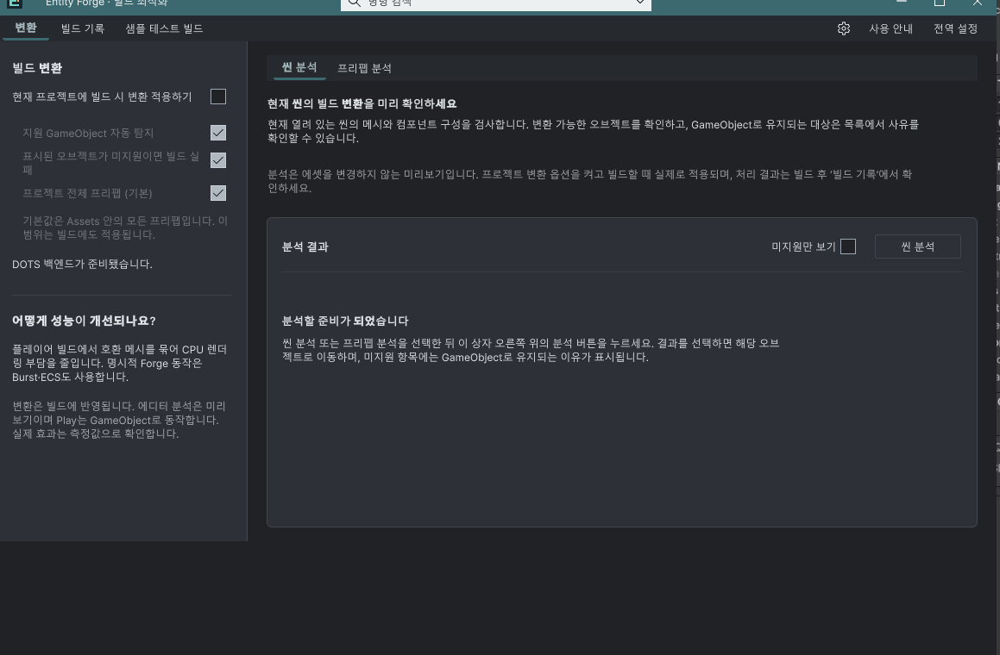

Tracefolio REPORTS & ISSUES
Tracefolio REPORTS & ISSUES좌측 설정 패널을 본문 높이까지 확장
검증 대기내용 높이에서 끝나던 좌측 패널을 본문 뷰포트 최소 높이에 맞추도록 수정했습니다.
작업 결과
작업 영역의 최소 높이를 본문 ScrollView contentViewport에 연동하고 좌측 패널을 세로 확장했습니다. 창 크기 변경에도 갱신되며 긴 내용은 기존 스크롤을 유지합니다.
변경 내용
적용 내용
UXML의 편집 가능한 구조는 유지하고, 본문 최초 배치와 GeometryChangedEvent에서 workbench.minHeight를 뷰포트 높이로 설정합니다. 고정 height나 max-height로 내용을 자르지 않습니다. 작업 영역 align-items와 좌측 패널 align-self를 stretch로 지정했습니다. 새 텍스트나 번역 키는 없습니다.
검증
소스 검사 근거. 뷰포트 연동·초기 배치·stretch 규칙, 7개 어셈블리 컴파일 및 현재 소스 해시 대조 통과. 패키지 400개 에셋 바이트 대조 통과, SHA-256 1cc2fd139f9f93f006a81d687cac5aea0d1b70689a35416fbab62bde0b305c88. 화면 조작·에디터 명령·빌드는 하지 않았습니다.
수정 전 사용자 제공 실제 화면입니다. 좌측 패널 배경이 창 하단 전에 끝납니다. 원본을 편집하지 않고 첨부했습니다.

남은 사항
사용자 화면 조작 금지에 따라 수정 후 실제 화면과 좁은/높은 창·긴 내용·탭 전환의 배치는 미검증입니다. 전후 비교 검증 완료로 표시하지 않습니다. 교훈 검토: ScrollView 내부에서 전체 높이가 필요한 패널은 표시 뷰포트와 최소 높이를 연동하되 내용의 자연 확장을 유지합니다. 프로젝트 메뉴얼에 기록하고 전역 변경은 하지 않았습니다.
작업 시간
- 제안 시간: 3~5분 · 시작 2026-11-03 01:44:09 KST
- 실제로 완료된 시간: 소스·컴파일·패키지 반영 1분 45초 · 2026-11-03 01:45:54 KST. 기록 공개 배포는 이후 확인.
- XERJ: 실패 — Xerj.ps1 Status: XERJ node is not running. rg와 현재 스타일/소스로 확인.